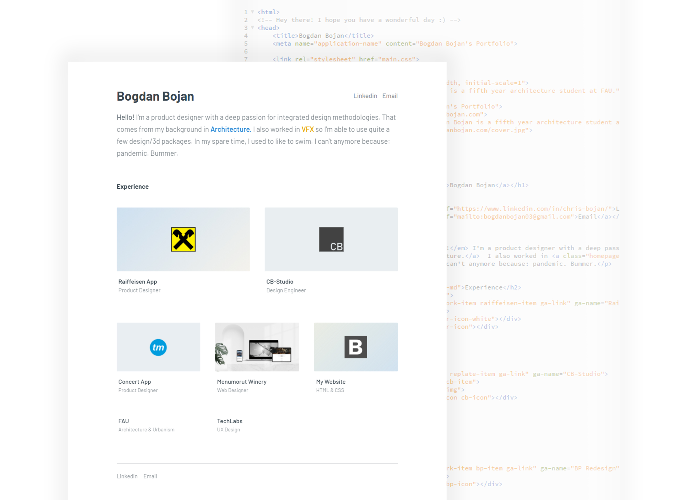

Highlights Include:
- CSS animations and user interactions
- Responsive design on devices
- Using Flexbox
- Using Git
- Fun 404 page
This technical endeavour regarding coding was continued when I built this website. I had to learn how to use git and a proper editor for my HTML and CSS. It made me realize what goes into making the visual aspect of a product. That strengthened my relationship with the devs and I feel I can communicate my ideas more clearly and make design choices with the engineers in my mind. It's a holistical approach that benefits all of us, in my opinion.
Back to home